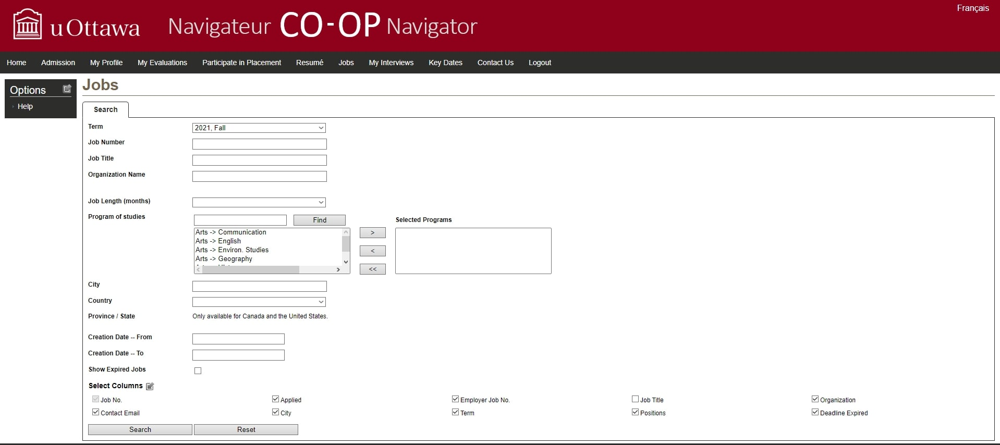

Survey On the UI of the uOttawa CO-OP Navigator
website

Please enter your Full name:
Please select your gender:
Male
Female
Other
Prefer not to say
Have you previously used the CO-OP Navigator?
Yes
No
Please select the statements you agree with:
I like the UI of the CO-OP Navigator
The UI needs alot of improvement
The UI functions properly
The UI is coherent
The UI is realiable
The UI is usable
Please write down any comments you have on the UI of the CO-OP Navigator here:
Submit Survey